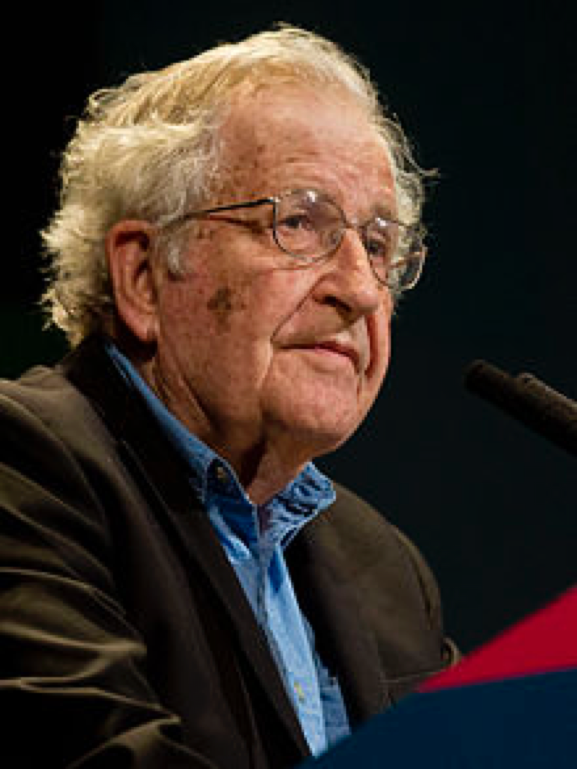
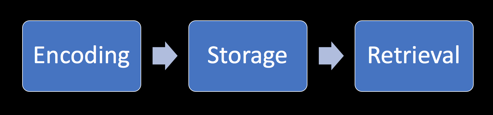
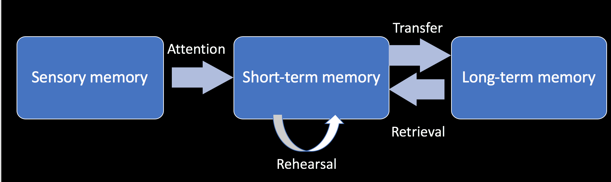

Increases the chance that behavior will occur again in future
Positive reinforcement occurs when a behavior (response) is rewarding or the behavior is followed by another stimulus that is rewarding, increasing the frequency of that behavior.
Negative reinforcement occurs when the rate of a behavior increases because an aversive event or stimulus is removed or prevented from happening.
Punishment:
Decreases the chance of repeating the behavior in future
Positive punishment - presenting aversive stimuli
Negative punishment – removing the reinforcing stimulus
Behavioral theory – applications
Applied behavior analysis – a radical behaviorist method of treatment, useful in autism, behavioral disorders, substance abuse
Cognitive-behavioral therapy – most widely used evidence-based intervention for treating mental disorders (i.e. depression, mood disorders, PTSD, eating disorders, OCD) as well as some supplementary treatment for other conditions (i.e. chronic low back pain, fibromyalgia)
Various animal learning models (i.e. used in physiological research)
Cognitive psychology
Cognitive psychology
Behaviorism, language and cognitive revolution
1959 – Noam Chomsky, critique of Verbal Behavior by Skinner
Behaviorist theory struggles with explaining language
A new paradigm in psychology – cognitive psychology
Noam Chomsky
Chomsky
Noam Chomsky
Father of modern linguistics
Universal grammar theory
Chomsky’s Hierarchy - a theoretical model of formal languages (theoretical basis for computer programming languages)
Attributed greatly to cognitive revolution
Most frequently cited living scientist (now 87 years old)
Cognitive dissonance
A theory by Leon Festinger
A dissonance is a feeling of discomfort when two an individual has, at the same time, two cognitions (thoughts, attitudes) that are in conflict with each other
The feeling of dissonance enables the individual to seek actions that reduce the dissonance – a source of motivation
A person will actively avoid information that may enlarge the dissonance
Memory
Types of memory:
Sensory, short-term and long-term memory (multi-store model of memory)
Procedural and declarative memory
Semantic and episodic memory
Working memory
Memory as a process
Memory as a process
Multi-store model (Atkinson, Shiffrin)
Magazines
Problems with multi-store model
Too simplistic – different kinds of memory (semantic and procedural long-term, visual and auditory sensory etc)
We are capable of remembering things without rehearsal
Data from patient with brain damage (Zlonoga and Gerber, 1986)
Difficulties regarding short-term memory.
Recognition of sounds such as spoken numbers, letters, words and easily identifiable noises (such as doorbells and cats meowing) were all impacted
Visual short-term memory was unaffected, suggesting a dichotomy between visual and audial memory